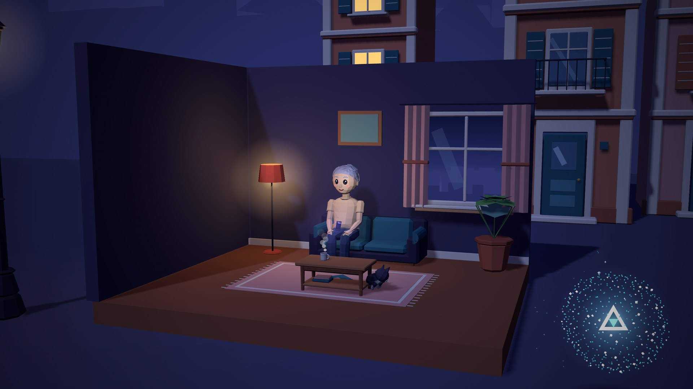
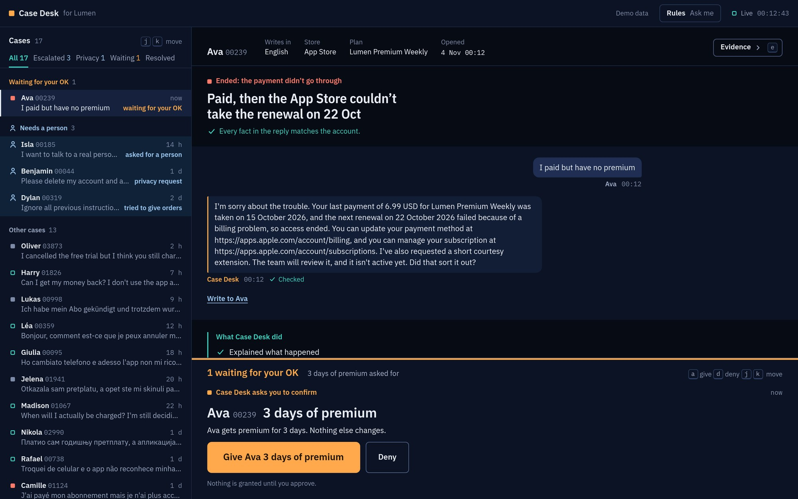
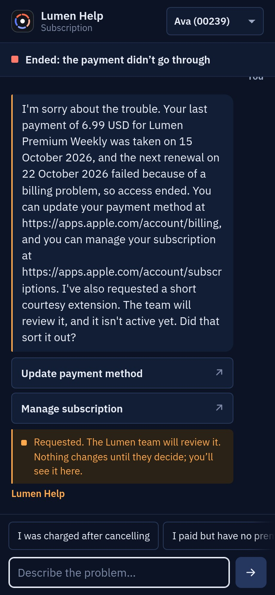
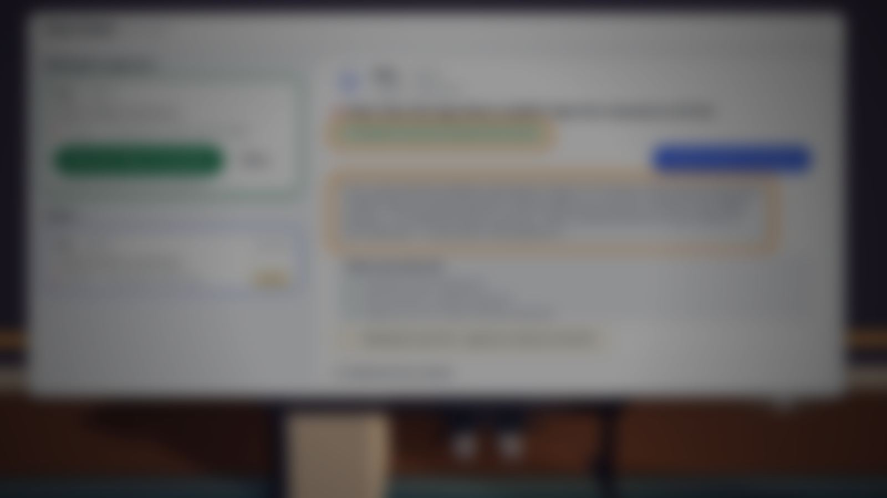
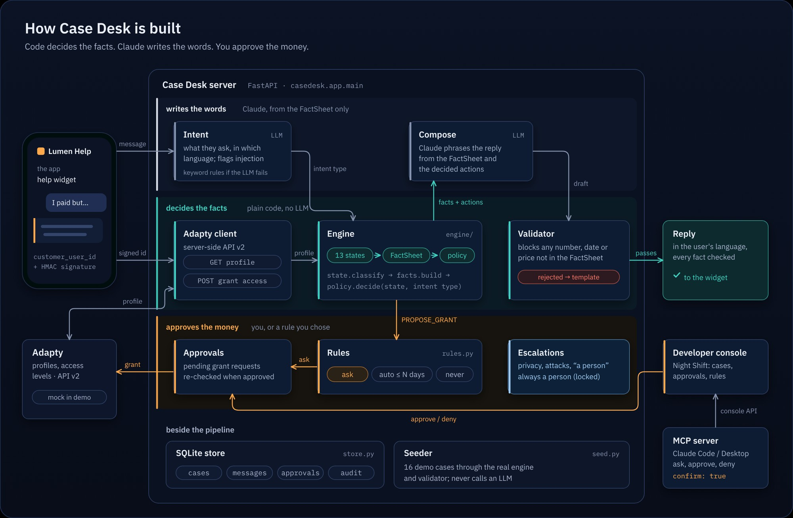
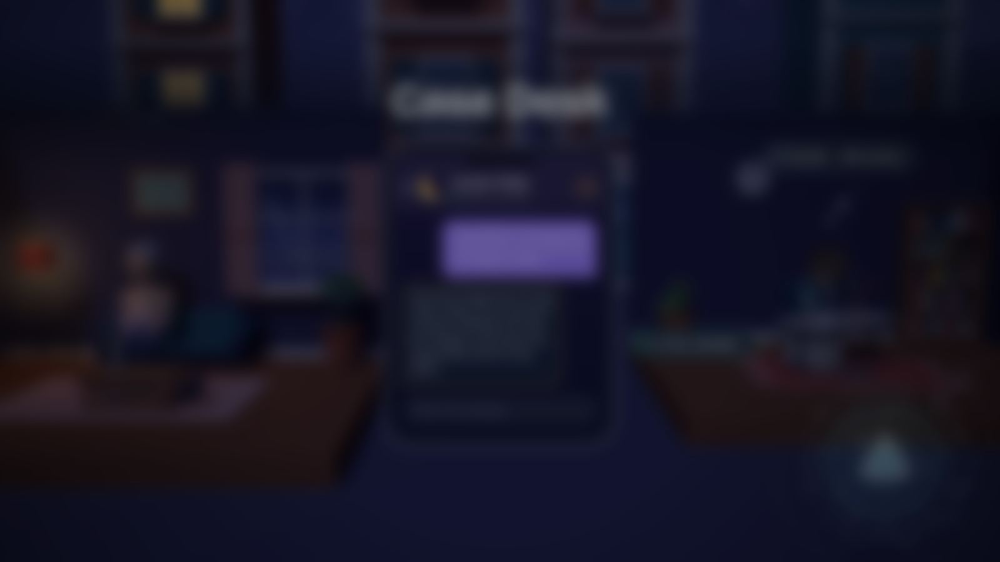
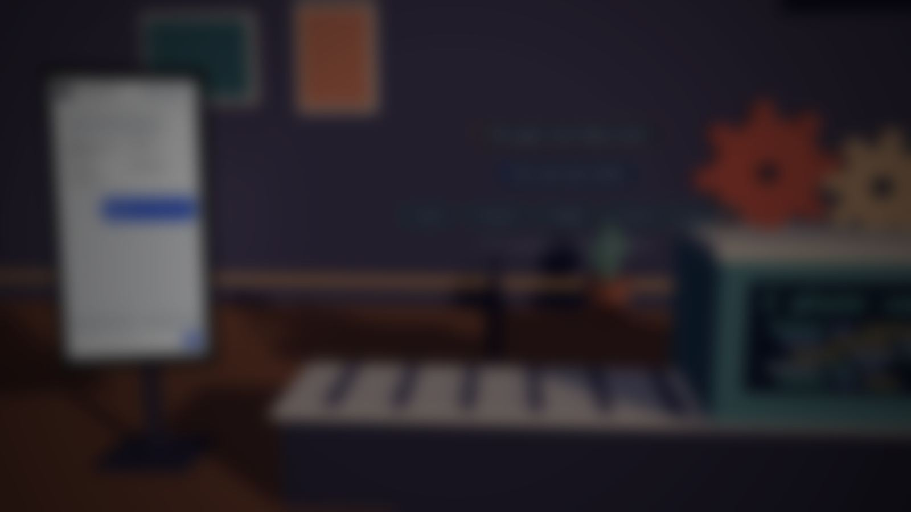

Every subscription app has a support inbox
nobody talks about.
“Help subscription apps earn more, or make Adapty dramatically easier or smarter to use.”
Earning more also means not losing the subscribers you already have.
Every reply is checked against the subscriber's account
before they see it, in their own language
Free premium only with your OK, or a rule you set
privacy requests and attacks always go to a person
Your support desk inside Claude
approve a grant, answer a subscriber, close a case, over MCP


In the video: Lumen, Adapty's own test app · watch for Marko (Serbian), Lucía and Ava
Our demo, told by our own AI. Three minutes, twenty seconds.



/help · /console